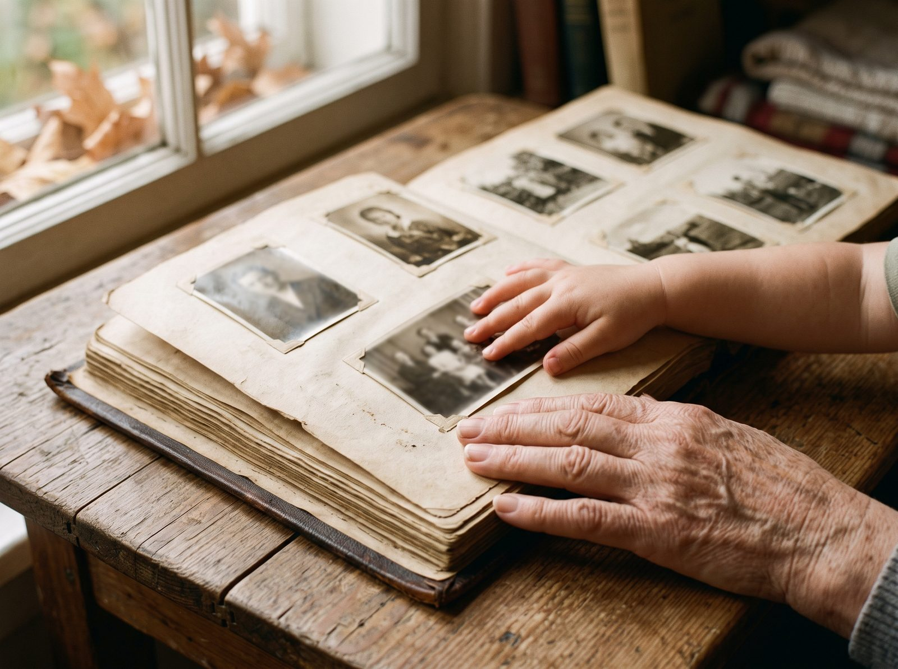
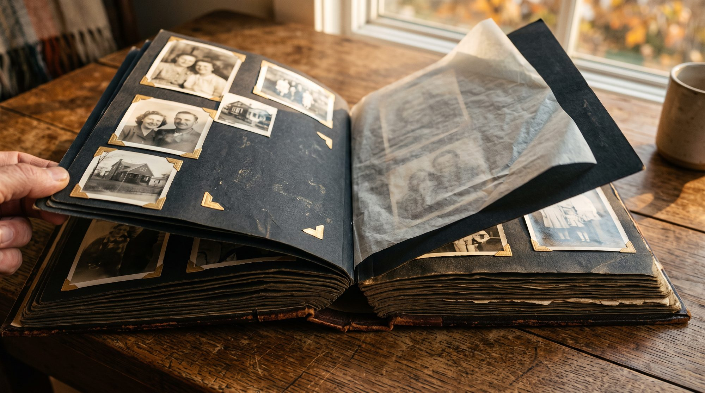
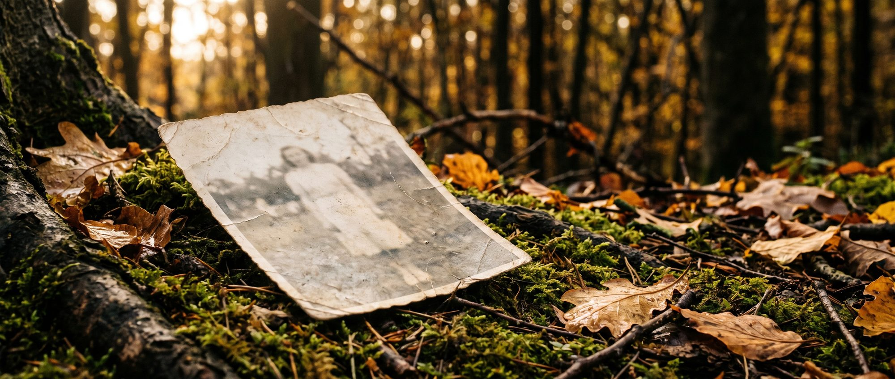
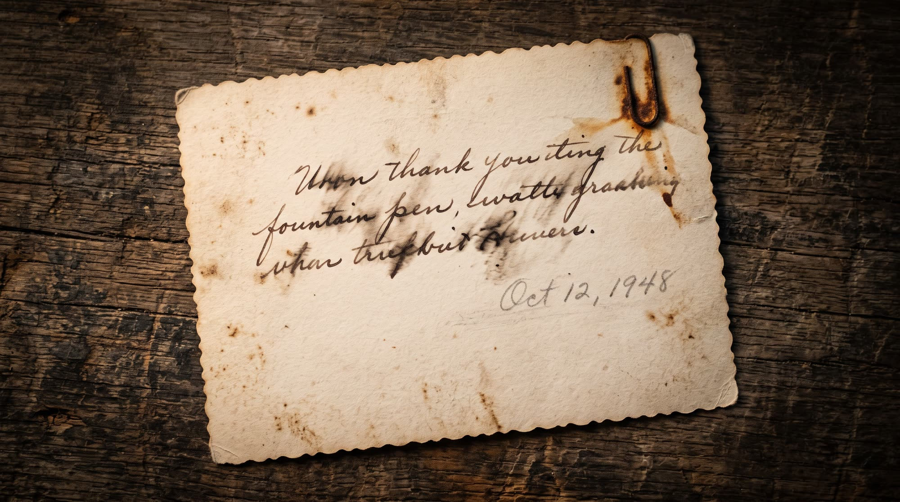
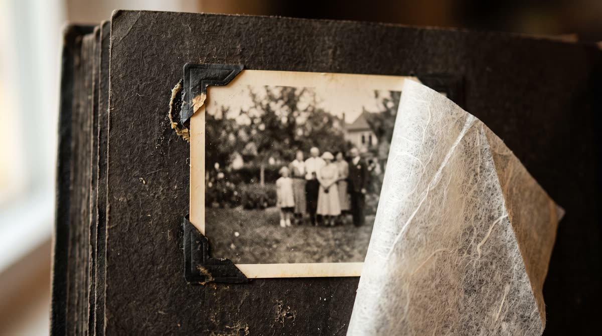
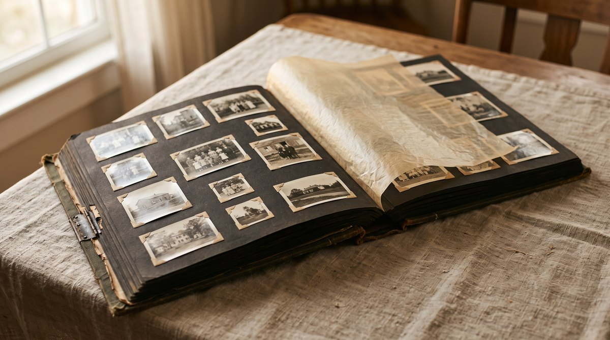
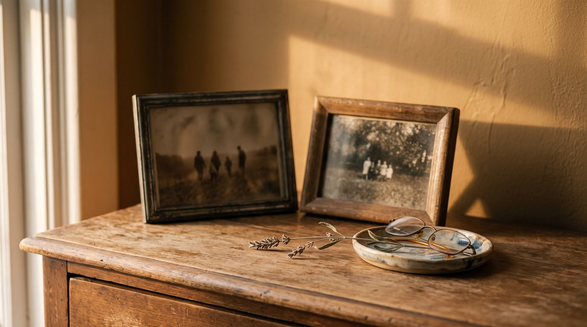

Между прабабушкой и внуком — одна коробка снимков
В большинстве семей история держится не на документах, а на пачке фотографий в шкафу. Пока кто-то может назвать людей на этих карточках, род ещё звучит. Когда назвать становится некому, остаётся просто бумага.
Мы работаем ровно с этим отрезком времени: пока снимок ещё цел настолько, что его можно прочитать, и пока рядом есть человек, который помнит имена.
«Это дед, а это его сестра. Её имени я уже не знаю» — самая частая фраза, которую мы слышим.

Мы относимся к снимку как к вещи, а не как к файлу
У бумажной фотографии есть возраст: заломы, выцветший угол, отпечаток пальца проявщика, надпись на обороте карандашом. Всё это — часть истории, а не дефект, который нужно стереть.
Поэтому мы восстанавливаем осторожно. Убираем то, что мешает увидеть человека: трещины, плесень, разрывы, потерю контраста. И оставляем то, что говорит о времени: зерно, характер бумаги, естественную мягкость старой оптики.
Что уходит
Трещины и разрывы, пятна сырости, царапины на эмульсии, жёлтый налёт, провал в тенях, из-за которого лица не видно.
Что остаётся
Зерно плёнки, мягкость старого объектива, поза, свет момента, надпись на обороте — мы сохраняем её отдельным кадром.
Чего мы не делаем
Не дорисовываем то, чего на снимке нет. Не меняем черты, не «улучшаем» внешность, не добавляем людям выражений, которых они не носили.

Лицо остаётся собой
Это главное правило работы и единственное, в котором мы не идём на компромисс. Если участок лица утрачен полностью, честнее оставить его мягким, чем придумать вместо человека похожего незнакомца.
- Черты не переписываются: форма глаз, нос, линия рта остаются такими, какими их снял фотограф.
- Если данных на снимке не хватает, мы говорим об этом прямо и показываем границу возможного.
- Сомнительные места мы обсуждаем с вами до выдачи, а не ставим перед фактом.
- Каждую работу перед отправкой смотрит человек, а не только программа.

Четыре шага, без личного кабинета и лишних форм
Приём заявок открыт сейчас. Вы пишете нам, мы смотрим материал глазами и говорим, что с ним реально сделать.
Вы показываете снимок
Скан или ровное фото при дневном свете. Подойдёт и телефон — важнее резкость, чем оборудование.
Мы смотрим сами
Оцениваем повреждения и говорим честно: где вернём детали, а где остаётся память о повреждении.
Работа руками
Аккуратная реставрация с проверкой на каждом этапе. Спорные участки согласуем с вами.
Возвращаем файл
Отдаём результат в исходном разрешении и версию для печати. Оригинал остаётся у вас.
Хорошая реставрация — это ночь работы, а не пара минут
Обычная карточка проходит путь за ночь: вы отдаёте её вечером, к утру она уже другая. Сложные случаи — сильные разрывы, утраченные фрагменты, групповые снимки с десятком лиц — занимают около 48 часов.
Мы специально не обещаем мгновенный результат. Скорость в этой работе оплачивается качеством, а платить им мы не готовы.
- Простая карточка — к утру следующего дня.
- Сложное повреждение — ориентировочно 48 часов.
- Если случай тяжелее, чем выглядел, мы предупреждаем заранее, а не молчим.
- Приём заявок идёт живой очередью; выдача сейчас на мягкой паузе, пока мы расширяем поток и держим качество.
Это значит: заявку мы примем и посмотрим ваш материал уже сегодня, но точную дату выдачи назовём, когда очередь снова откроется. Так честнее, чем взять деньги и молчать.
Бумагу мы не забираем и не переклеиваем
Нам нужен только скан или ровное фото — сама карточка всё это время лежит у вас дома. Ниже то, что стоит сделать с оригиналом — даже если работать с ним будем не мы.
Это не услуга и не продажа: просто вещи, которые продлевают жизнь бумаге и ничего не стоят.
- Держите снимки подальше от прямого солнца: выцветание необратимо, вернуть цвет можно уже только копии.
- Не ламинируйте и не вклеивайте в «магнитный» альбом с плёнкой: клей въедается в эмульсию и снять его потом почти невозможно.
- Подписывайте на обороте мягким карандашом по краю, а не шариковой ручкой — паста продавливает изображение с лицевой стороны.
- Храните в бумажном конверте или папке без ПВХ, в сухом месте при комнатной температуре.
- Сканируйте с запасом: 600 dpi для обычной карточки и 1200 dpi, если снимок меньше ладони.

Альбом собирали руками
Чёрные бумажные уголки, папиросная бумага между страницами, карандашная пометка на полях. Кто-то сидел вечером за столом и вклеивал это по одной карточке. Альбом был вещью, которую делали, а не папкой в телефоне.
Мы стараемся сохранить именно это ощущение ручной работы: бумага остаётся бумагой, а не гладкой картинкой без возраста.

У архива есть вес
Возьмите пачку снимков в руку - и станет понятно, что это не файлы. Края обтрёпаны, углы скруглены пальцами, бумага разной толщины - печатали в разные годы и в разных местах.
Мы работаем только с копией. Сама стопка остаётся у вас и в том же порядке, в котором лежала.
Страница держит целый год
На одном развороте умещается два десятка маленьких карточек: кто-то раскладывал их по порядку, оставлял между ними ровные промежутки и решал, что с чем соседствует.
Этот порядок - тоже часть архива. Мы его не меняем и не пересобираем альбом по-своему.

Снимок возвращается не в папку, а на комод
У каждой семьи есть такое место: угол комода у окна, две рамки, очки на блюдце, сухая ветка, которую никто не выбрасывает. Сюда смотрят каждый день, даже не замечая этого.
Поэтому важно, чтобы с карточки смотрел тот же человек, который стоял там все эти годы.

Между страницами лежит папиросная бумага
Альбом открывают у окна и перелистывают медленно: тонкий прозрачный лист приходится придерживать пальцем, чтобы он не цеплял уголки. Кто-то когда-то положил его туда именно для этого.
Снять разворот можно прямо так, не вынимая карточек из уголков. Если бумага держится на честном слове - лучше вообще её не трогать.
Пока снимок ещё можно прочитать
Оставьте место в очереди — мы напишем, когда сможем взять вашу фотографию в работу, и до этого не будем беспокоить вас ничем другим.
Ваши снимки остаются вашими. Мы не публикуем работы без разрешения и не используем чужие семейные фотографии как витрину.